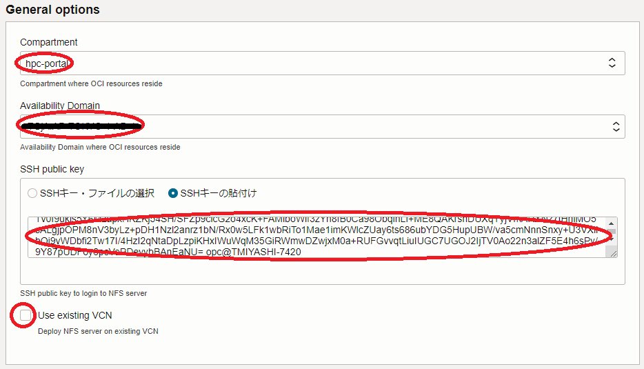
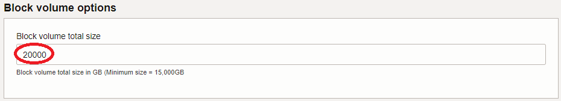
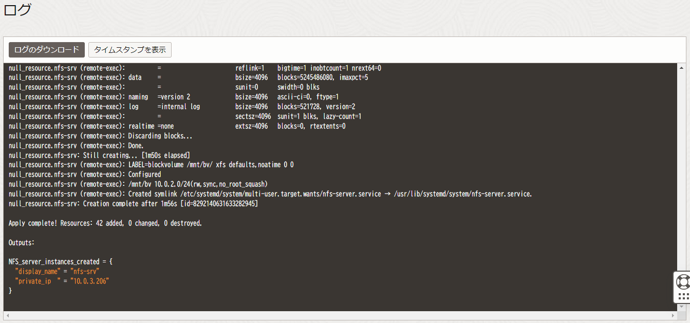

0. 概要
ブロック・ボリューム は、以下の特徴からHPCクラスタやGPUクラスタのファイル共有ストレージとして使用するNFSサーバのストレージに最適なサービスです。
- 同一 可用性ドメイン 内の異なる フォルト・ドメイン に複数のレプリカを持ち高い可用性を実現
- ディスク装置にNVMe SSDを採用することで高いスループットとIOPSを実現
また、ベア・メタル・シェイプ BM.Optimized3.36 は、50 GbpsのTCP/IP接続用ポートを2個搭載し、それぞれをiSCSI接続の ブロック・ボリューム アクセス用途とNFSクライアントへのNFSサービス用途に割当てることで、コストパフォーマンスの高いNFSサーバ用インスタンスとして利用することが可能です。
OCIは、NFSのマネージドサービスである ファイル・ストレージ も提供していますが、本チュートリアルのように ブロック・ボリューム とベア・メタル・シェイプ BM.Optimized3.36 を使用してNFSでサービスするファイル共有ストレージ（以降ブロック・ボリュームNFSサーバと呼称）を構築することで、 ファイル・ストレージ よりも格段にコストパフォーマンスを引き上げることが出来ます。
ファイル・ストレージ とブロック・ボリュームNFSサーバの比較詳細は、 OCI HPCテクニカルTips集 の HPC/GPUクラスタ向けファイル共有ストレージの最適な構築手法 を参照してください。
本チュートリアルは、 GitHub のパブリックレポジトリ（ tutorial_bvnfs ）から公開されている Terraform スクリプトを リソース・マネージャ に読み込ませて作成する スタック を使用し、以下構成のNFSでサービスするファイル共有ストレージを自動構築（図中の Deployment target 範囲）した後、NFSファイルシステム性能をNFSクライアントから実行する IOR と mdtest で検証します。
この IOR と mdtest の検証結果は、 OCI HPCテクニカルTips集 の HPC/GPUクラスタ向けファイル共有ストレージの最適な構築手法 の 2-1. コストパフォーマンスによる比較 を参照してください。

| 構成 | 用途 | |
|---|---|---|
| ストレージ | ブロック・ボリューム Min. 1 TB Balanced x 15 |
ファイル共有ストレージ ファイル格納領域 |
| NFSサーバ | BM.Optimized3.36 x 1 Oracle Linux 9.4 |
NFSサーバ |
| プライベートエンドポイント | リソース・マネージャ プライベートエンドポイント x 1 |
NFSサーバ構築スクリプトを配布・起動する Terraform プロビジョナー用エンドポイント |
| NFSクライアント | VM.Standard2.24 x 4 Oracle Linux 8.10 |
ファイルシステムベンチマーク用 NFSクライアント |
本チュートリアルで作成するブロック・ボリュームNFSサーバ構築用の スタック は、適用すると以下の処理を行います。
- 仮想クラウド・ネットワーク と関連するネットワークリソースの作成（※1）
- ブロック・ボリューム の作成
- NFSサーバ用インスタンスの作成
- 作成した ブロック・ボリューム をNFSサーバにアタッチ
- Terraform プロビジョナーでNFSサーバにSSHアクセスする際に使用するSSH鍵ペア作成・配布
- Terraform のfileプロビジョナーでNFSサーバにNFSサーバ構成用スクリプト（※3）を配布
- Terraform のremote-execプロビジョナーでNFSサーバ上でNFSサーバ構成用スクリプト（※3）を実行
- 構築したNFSサーバのホスト名・IPアドレス出力
※1）既存の 仮想クラウド・ネットワーク を活用することも可能で、この場合はこの 仮想クラウド・ネットワーク が以下の条件を満たしているている必要があります。
- NFSサーバ・NFSクライアント間接続用NFSプライベートサブネットが存在する（※2）
- NFSサーバ・ ブロック・ボリューム 間iSCSI接続用Storageプライベートサブネットが存在する（※2）
- NATゲートウェイ と サービス・ゲートウェイ が存在する
- 各プライベートサブネットに NATゲートウェイ と サービス・ゲートウェイ へのルーティングを適切に設定した ルート・テーブル が紐づいている
※2）それぞれ独立したサブネットである必要があります。
※3）このスクリプト（ nfssrv_configure.sh ）は、NFSサーバのopcユーザのホームディレクトリに配置され、以下の処理を行います。
- ブロック・ボリューム のストレージに
- ボリュームグループを作成
- 論理ボリュームをストライブ幅15（ブロック・ボリューム 数15に対応）で作成
- XFSファイルシステムを作成
- 作成したXFSファイルシステムを /mnt/bv にマウント
- NFSサービスを以下の設定で起動
- スレッド数64
- /mnt/bv をworld writableでエクスポート
またこの スタック は、 cloud-init 設定ファイル( cloud-config )を含み、 cloud-init がNFSサーバの作成時に以下の処理を行います。
- タイムゾーンをJSTに変更
- firewalld 停止
- SELinux 無効化
所要時間 : 約1時間
前提条件 : ブロック・ボリュームNFSサーバを収容するコンパートメント(ルート・コンパートメントでもOKです)の作成と、このコンパートメントに対する必要なリソース管理権限がユーザーに付与されていること。
注意 : 本コンテンツ内の画面ショットは、現在のOCIコンソール画面と異なっている場合があります。
1. 事前準備
1-0. 概要
本章は、ブロック・ボリュームNFSサーバを構築するにあたり事前に必要な以下リソースを作成します。
- 構成ソース・プロバイダ
- IAMポリシー
- スタック
1-1. 構成ソース・プロバイダ作成
本章は、ひな型となる Terraform スクリプトを GitHub パブリックレポジトリから取り込むための 構成ソース・プロバイダ を作成します。
構成ソース・プロバイダ の作成は、 ここ を参照してください。
1-2. IAMポリシー作成
本章は、 スタック からブロック・ボリュームNFSサーバを作成するために必要な IAMポリシー を作成します。
OCIコンソールにログインし、 アイデンティティとセキュリティ → ポリシー とメニューを辿ります。
次に、表示される以下 xxxxコンパートメント内のポリシー 画面で、 ポリシーの作成 ボタンをクリックします。
この際、 コンパートメント プルダウンメニューがブロック・ボリュームNFSサーバを作成する コンパートメント と異なる場合は、これを修正します。
次に、表示される以下 ポリシーの作成 画面で、各フィールドに以下の情報を入力し 作成 ボタンをクリックします。なお、ここに記載のないフィールドは、デフォルトのままとします。
- 名前 ： IAMポリシー に付与する名前
- 説明 ： IAMポリシー に付与する説明（用途等）
- ポリシー・ビルダー ： 作成する IAMポリシー を指定する以下構文（ 手動エディタの表示 ボタンをクリックして表示）
allow service compute_management to use tag-namespace in compartment compartment_name
allow service compute_management to manage compute-management-family in compartment compartment_name
allow service compute_management to read app-catalog-listing in compartment compartment_name
allow group group_name to manage all-resources in compartment compartment_name
※1）コンパートメント 名は、自身のものに置き換えます。
※2）4行目の グループ 名は、自身のものに置き換えます。

1-3. スタック作成
本章は、ブロック・ボリュームNFSサーバを構築するための スタック を作成します。
OCIコンソールにログインし、ブロック・ボリュームNFSサーバを作成するリージョンを選択後、 開発者サービス → リソース・マネージャ → スタック とメニューを辿ります。
次に、表示される以下画面で、スタックの作成 ボタンをクリックします。
次に、表示される以下 スタック情報 画面で、以下の情報を入力し、下部の 次 ボタンをクリックします。
- Terraformの構成のオリジン : ソース・コード制御システム
- ソースコード管理タイプ : GitHub
- 構成ソース・プロバイダ : 先に作成した 構成ソース・プロバイダ
- リポジトリ : tutorial_bvnfs
- ブランチ : master
- 名前 : スタックに付与する名前（任意）
- 説明 : スタックに付与する説明（任意）

次に、表示される 変数の構成 画面で、各画面フィールドに以下の情報を入力し、下部の 次 ボタンをクリックします。
- General options フィールド
- Compartment : ブロック・ボリュームNFSサーバを作成する コンパートメント
- Availability Domain : ブロック・ボリュームNFSサーバを作成する 可用性ドメイン
- SSH public key : NFSサーバにログインする際使用するSSH秘密鍵に対応する公開鍵
（公開鍵ファイルのアップロード（ SSHキー・ファイルの選択 ）と公開鍵のフィールドへの貼り付け（ SSHキーの貼付け ）が選択可能） - Use existing VCN : 既存の 仮想クラウド・ネットワーク を使用するかどうかを指定（デフォルト： 仮想クラウド・ネットワーク を新規作成）
（既存の 仮想クラウド・ネットワーク を使用する場合は、チェックすると表示されるVCN・Storageサブネット・NFSサブネットの各フィールドにOCIDを指定します。）

- Block volume options フィールド
- Block volume total size : ブロック・ボリューム の総容量（最低：15,000GB）

次に、表示される 確認 画面で、これまでの設定項目が意図したものになっているかを確認し、以下 作成されたスタックで適用を実行しますか。 フィールドの 適用の実行 をチェックオフし、下部の 作成 ボタンをクリックします。

ここで 適用の実行 をチェックした場合、 作成 ボタンのクリックと同時に スタック の適用が開始され、ブロック・ボリュームNFSサーバの構築が始まりますが、このチュートリアルでは後の章で改めて スタック の適用を行います。
これで、以下画面のとおりブロック・ボリュームNFSサーバ構築用 スタック が作成されました。
2.ブロック・ボリュームNFSサーバ構築
本章は、先に作成した スタック を使用し、ブロック・ボリュームNFSサーバを構築します。
以下 スタックの詳細 画面で、 適用 ボタンをクリックします。
次に、表示される以下 適用 サイドバーで、 適用 ボタンをクリックします。

次に、表示される以下 ジョブ詳細 ウィンドウで、左上のステータスが 受入れ済 → 進行中 と遷移すれば、 スタック の適用が実施されています。

表示される以下 ログ フィールドで、リソースの作成状況を確認します。

この適用が完了するまでの所要時間は、5分程度です。
ステータスが 成功 となれば、ブロック・ボリュームNFSサーバの作成が完了しており、以下のように ログ フィールドの最後にNFSサーバのホスト名とIPアドレスが出力されます。
Outputs:
NFS_server_instances_created = {
"display_name" = "nfs-srv"
"private_ip " = "10.0.3.206"
}
3. ブロック・ボリュームNFSサーバ確認
3-0. 概要
本章は、作成されたブロック・ボリュームNFSサーバ環境を確認します。
3-1. NFSサーバログイン
NFSサーバは、プライベートサブネットに接続されているため、パブリックサブネットに接続されているBastionノードや、プライベートサブネットに接続するインスタンスへのSSH接続を提供する 要塞 を使用し、構築時に指定したSSH公開鍵に対応する秘密鍵を使用してopcユーザでSSHログインします。
3-2. cloud-init完了確認
cloud-init は、NFSサーバが起動してSSHログインできる状態であっても、その処理が継続している可能性があるため、以下コマンドをNFSサーバのopcユーザで実行し、そのステータスが done となっていることで cloud-init の処理完了を確認します。
$ cloud-init status
status: done
$
ステータスが running の場合は、 cloud-init の処理が継続中のため、処理が完了するまで待ちます。
3-3. NFSサーバOS再起動
以下コマンドをNFSサーバのopcユーザで実行し、OSを再起動します。
$ sudo shutdown -r now
3-4. NFSサーバファイルシステム確認
以下コマンドをNFSサーバのopcユーザで実行し、 ブロック・ボリューム 上に作成したファイルシステムが /mnt/bv にマウントされ、そのサイズが指定したものになっていることを確認します。
$ df -h /mnt/bv
Filesystem Size Used Avail Use% Mounted on
/dev/mapper/bv-bv xxxT xxxG xxxT x% /mnt/bv
$
3-5. NFSサーバNFSサービス確認
以下コマンドをNFSサーバのopcユーザで実行し、NFSサービスが起動しており ブロック・ボリューム 上に作成したファイルシステム（ /mnt/bv ）がエクスポートされていることを確認します。
$ systemctl status nfs-server.service
● nfs-server.service - NFS server and services
Loaded: loaded (/usr/lib/systemd/system/nfs-server.service; enabled; preset: disabled)
Drop-In: /run/systemd/generator/nfs-server.service.d
└─order-with-mounts.conf
Active: active (exited) since Thu 2024-10-03 12:22:18 JST; 2h 29min ago
Docs: man:rpc.nfsd(8)
man:exportfs(8)
Main PID: 18857 (code=exited, status=0/SUCCESS)
CPU: 29ms
Oct 03 12:22:18 nfs-srv systemd[1]: Starting NFS server and services...
Oct 03 12:22:18 nfs-srv exportfs[18779]: exportfs: No host name given with /mnt/bv (rw,sync,no_root_squa>
Oct 03 12:22:18 nfs-srv systemd[1]: Finished NFS server and services.
$ sudo exportfs
/mnt/bv <world>
$
4. NFSクライアント設定
本章は、NFSサーバでエクスポートしている /mnt/bv をNFSクライアントでマウントします。
以下コマンドをNFSクライアントのopcユーザで実行し、NFSサーバでエクスポートされている /mnt/bv を /mnt/nfs としてNFSマウントします。
なお、コマンド中の nfs_server_ip は、自身のNFSサーバのNFSプライベートサブネット側のIPアドレスにに置き換えます。
$ echo "nfs_server_ip:/mnt/bv /mnt/nfs nfs vers=3,defaults,noatime,nodiratime,bg,timeo=100,ac,actimeo=120,nocto,rsize=1048576,wsize=1048576,nolock,local_lock=none,proto=tcp,sec=sys,_netdev 0 0" | sudo tee -a /etc/fstab
$ sudo systemctl daemon-reload
$ sudo mkdir -p /mnt/nfs
$ sudo mount /mnt/nfs
5. ファイルシステムベンチマーク
5-0. ファイルシステムベンチマーク概要
本章は、ファイルシステムベンチマークツールである IOR と mdtest をNFSクライアントからNFSファイルシステム領域に対して実行し、その性能を検証します。
IOR と mdtestは、複数のNFSクライアントからベンチマークを実行する際のNFSクライアント間通信にMPIを使用します。ここでは、 OpenMPI を使用します。
またここで使用する IOR と mdtest は、 IO500 に含まれるものを使用します。
以上より、本章で実施するファイルシステムベンチマークは、以下の手順を経て行います。
- NFSクライアント用インスタンス作成
- OpenMPI インストール
- IO500 インストール
- ファイルシステムベンチマーク実行
5-1. NFSクライアント用インスタンス作成
NFSクライアントとして使用する以下のインスタンスを作成します。
- シェイプ ： VM.Standard2.24
- OS ： Oracle Linux 8.10（Oracle-Linux-8.10-2024.08.29-0 UEK）
- インスタンス数 ：4
- 接続サブネット ：NFSプライベートサブネット
次に、これら4ノードのNFSクライアントで、 4. NFSクライアント設定 の手順に従い、ブロック・ボリュームNFSサーバのストレージをNFSマウントします。
5-2. OpenMPIインストール
OCI HPCテクニカルTips集 の Slurm環境での利用を前提とするOpenMPI構築方法 に従い、4ノードのNFSクライアントに OpenMPI をインストールします。
次に、NFSクライアントのうちのどれか1ノードにopcユーザでSSHログインし、以下のように4ノードのNFSクライアントのホスト名を含むファイルを /mnt/nfs/io500 ディレクトリに作成、これを使用してOpenMPIの稼働確認を行います。
$ pwd
/mnt/nfs/io500
$ cat ./hostlist.txt
inst-mf3vw-nfscli
inst-ph77v-nfscli
inst-lbjs1-nfscli
inst-2cxtz-nfscli
$ mpirun -n 4 -N 1 -hostfile ./hostlist.txt /bin/hostname
inst-mf3vw-nfscli
inst-ph77v-nfscli
inst-2cxtz-nfscli
inst-lbjs1-nfscli
$
5-3. IO500インストール
以下コマンドをNFSクライアントのうちのどれか1ノードのopcユーザで実行し、IO500を /mnt/nfs/io500/io500 ディレクトリににインストールします。
$ sudo yum install -y git autoconf automake
$ pwd
/mnt/nfs/io500
$ git clone https://github.com/IO500/io500.git -b io500-isc20
$ cd io500
$ ./prepare.sh
5-4. ファイルシステムベンチマーク実行
IOR と mdtest を実行する以下のスクリプトを /mnt/nfs/io500/io500_easy.sh として作成し、これに実行権を与えます。
#!/bin/bash
MPI_HOSTFILE=/mnt/nfs/io500/hostlist.txt
IO500_BIN_PATH=/mnt/nfs/io500/io500/bin
IO500_DATA_DIR=/mnt/nfs/io500/datafiles
# Set the number of times to repeat each test for mdtest and ior
rep_count=3
# Set MPI parameter from arguments
if [[ "$1" =~ ^[0-9]+$ && "$2" =~ ^[0-9]+$ ]]; then
num_proc_total=$1
num_proc_pnode=$2
else
echo "Specify num. of MPI total processes as 1st argument and num. of processes per node as 2nd argument."
exit 1
fi
# mdtest easy write
for i in `seq 1 $rep_count`
do
name="try"$i
echo "### Starting mdtest easy write $name"
mkdir -p $IO500_DATA_DIR/$name/mdt_easy
date '+%Y/%m/%d %T'
mpiexec --mca btl_base_warn_component_unused 0 --mca pml ob1 -np $num_proc_total -npernode $num_proc_pnode -hostfile $MPI_HOSTFILE $IO500_BIN_PATH/mdtest -Y -C -F -P -d $IO500_DATA_DIR/$name/mdt_easy -n 1000000 -u -L -a POSIX -x $IO500_DATA_DIR/$name/mdt_easy-stonewall -N 1 -W 300
done
# IOR easy write
for i in `seq 1 $rep_count`
do
name="try"$i
echo "### Starting IOR easy write $name"
mkdir -p $IO500_DATA_DIR/$name/ior_easy
date '+%Y/%m/%d %T'
mpiexec --mca btl_base_warn_component_unused 0 --mca pml ob1 -np $num_proc_total -npernode $num_proc_pnode -hostfile $MPI_HOSTFILE $IO500_BIN_PATH/ior -w -a POSIX -t 2m -v -b 9920000m -F -i 1 -C -Q 1 -g -G 27 -k -e -o $IO500_DATA_DIR/$name/ior_easy -O stoneWallingStatusFile=$IO500_DATA_DIR/$name/stonewall -O stoneWallingWearOut=1 -D 300
done
# IOR easy read
for i in `seq 1 $rep_count`
do
name="try"$i
echo "### Starting IOR easy read $name"
date '+%Y/%m/%d %T'
mpiexec --mca btl_base_warn_component_unused 0 --mca pml ob1 -np $num_proc_total -npernode $num_proc_pnode -hostfile $MPI_HOSTFILE $IO500_BIN_PATH/ior -r -R -a POSIX -t 2m -v -b 9920000m -F -i 1 -C -Q 1 -g -G 27 -k -e -o $IO500_DATA_DIR/$name/ior_easy -O stoneWallingStatusFile=$IO500_DATA_DIR/$name/stonewall
done
# mdtest easy stat
for i in `seq 1 $rep_count`
do
name="try"$i
echo "### Starting mdtest easy stat $name"
date '+%Y/%m/%d %T'
mpiexec --mca btl_base_warn_component_unused 0 --mca pml ob1 -np $num_proc_total -npernode $num_proc_pnode -hostfile $MPI_HOSTFILE $IO500_BIN_PATH/mdtest -T -F -P -d $IO500_DATA_DIR/$name/mdt_easy -n 1000000 -u -L -a POSIX -x $IO500_DATA_DIR/$name/mdt_easy-stonewall -N 1
done
# mdtest easy delete
for i in `seq 1 $rep_count`
do
name="try"$i
echo "### Starting mdtest easy delete $name"
date '+%Y/%m/%d %T'
mpiexec --mca btl_base_warn_component_unused 0 --mca pml ob1 -np $num_proc_total -npernode $num_proc_pnode -hostfile $MPI_HOSTFILE $IO500_BIN_PATH/mdtest -r -F -P -d $IO500_DATA_DIR/$name/mdt_easy -n 1000000 -u -L -a POSIX -x $IO500_DATA_DIR/$name/mdt_easy-stonewall -N 1
done
date '+%Y/%m/%d %T'
このスクリプトは、 mdtest のcreate, stat, deleteと IOR のwrite, readを各3回実行し、NFSファイルシステムのメタデータ性能とスループット性能を計測します。
次に、以下コマンドをNFSクライアントのうちの1ノードのopcユーザで実行し、スクリプトの出力から性能値を確認します。
この実行に要する時間は、一時間程度です。
$ pwd
/mnt/nfs/io500
$ ./io500_easy.sh 16 4
6. スタックの破棄
本章は、 スタック を破棄することで、構築したブロック・ボリュームNFSサーバ環境を削除します。
以降の手順を実施すると、本チュートリアルで作成したOCI上のリソースをすべて削除することになるため、 ブロック・ボリューム上に作成したファイルが全て消失 します。
以下 スタックの詳細 画面で、 破棄 ボタンをクリックします。
次に、表示される以下 破棄 サイドバーで、 破棄 ボタンをクリックします。

次に、表示される以下 ジョブ詳細 ウィンドウで、左上のステータスが 受入れ済 → 進行中 と遷移すれば、 スタック の破棄が実施されています。

表示される以下 ログ フィールドで、リソースの削除状況を確認します。
この破棄が完了するまでの所要時間は、3分程度です。
ステータスが 成功 となれば、ブロック・ボリュームNFSサーバ環境の削除が完了しています。
これで、このチュートリアルは終了です。